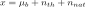
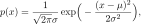
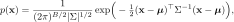
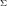
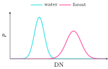

Model
For a homogeneous region (e.g. one crop field), pixel values in band  :
:

, sum of the class mean, thermal noise and natural variability (moisture, leaf angle, local slope). By the central limit theorem



capturing the correlation between bands. Noise is additive: its variance does not depend on the mean level.Picture

Two homogeneous classes in one band: two Gaussians.
Intuition
A field looks uniform to the eye and grainy to the sensor; the grain is many small random effects, and their sum is bell-shaped.
Pitfall
Real classes are often not one Gaussian (a "forest" mixes species and slopes): multimodal classes need several spectral subclasses or non-parametric classifiers.